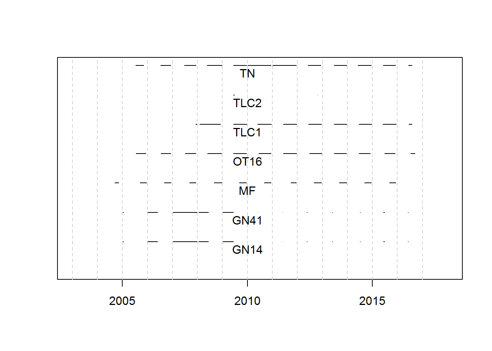

Sturgeon sampling starts October 31 of the preceeding year and goes until October 30 of the current calendar year. Sturgeon season starts in the fall when water temperatures fall below 55F the maximum for gill nets and trotlines and then goes until June 30.
From Integrative Science Report Sampling occurs from October 31 of the preceding calendar year to October 30 of the current calendar year. Each year includes two sampling seasons: sturgeon-focused (Sturgeon Season; ST) and native fish community-focused (Fish Community Season; FC) season. Sturgeon season runs from fall when water temperatures are first below the maximum set for gill nets and trotline deployment to June 30; however, in attempts to minimize Pallid Sturgeon stress during collection, the sampling year was further defined by the restriction that gill nets and trammel nets could not be used above a water temperature of 12.8C (55F). Fish community season runs from July 1 to October 31, overlapping ST for water temperatures below 12.8C (55F) prior to October 31.
For the upper basin we will look at
For the lower basin we will look at
The upper basin fishes more gears for shorter durations. The effort is dominated by trotlines, trammel nets, and otter trawls. Gill newts were used early on but are used during a short window of for the past 5-10 years.

Some active gears like otter trawls may be fished on the same day as passive gears are set. In the lower basin there were 54 instances of gears being fished on the same day and bend. In all cases combinations were limited to 2 gears.
| Gear combination | Frequency |
|---|---|
| GN14 & TLC1 | 3 |
| MF & OT16 | 5 |
| MF & TLC1 | 1 |
| MF & TN | 42 |
| OT16 & TN | 1 |
| TLC1 & TN | 2 |
More gears were fished at the same place and time in the upper basin. There were 549 instances of gears being fished on the same day and bend. The number of gears fished varied from 2 to 4. The combinations of gears set in the same bend on the same day are summarized below.
| Gear combination | Frequency |
|---|---|
| MF & OT16 | 65 |
| MF & OT16 & TLC1 | 2 |
| MF & OT16 & TLC1 & TN | 6 |
| MF & OT16 & TN | 106 |
| MF & TLC1 | 14 |
| MF & TLC1 & TN | 2 |
| MF & TN | 109 |
| OT16 & TLC1 | 13 |
| OT16 & TLC1 & TN | 5 |
| OT16 & TN | 213 |
| TLC1 & TN | 14 |